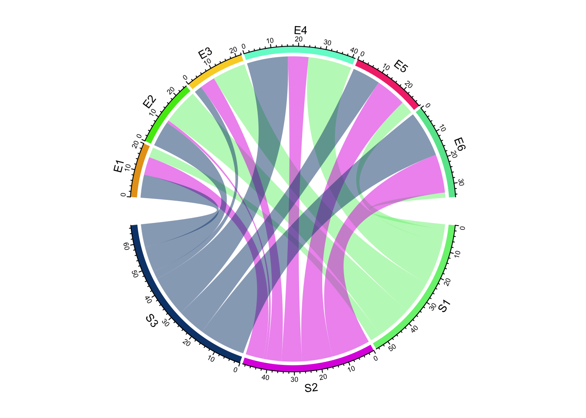
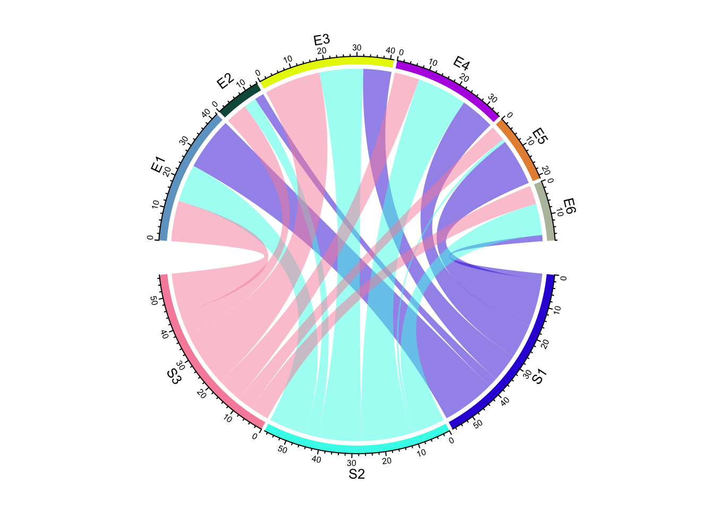
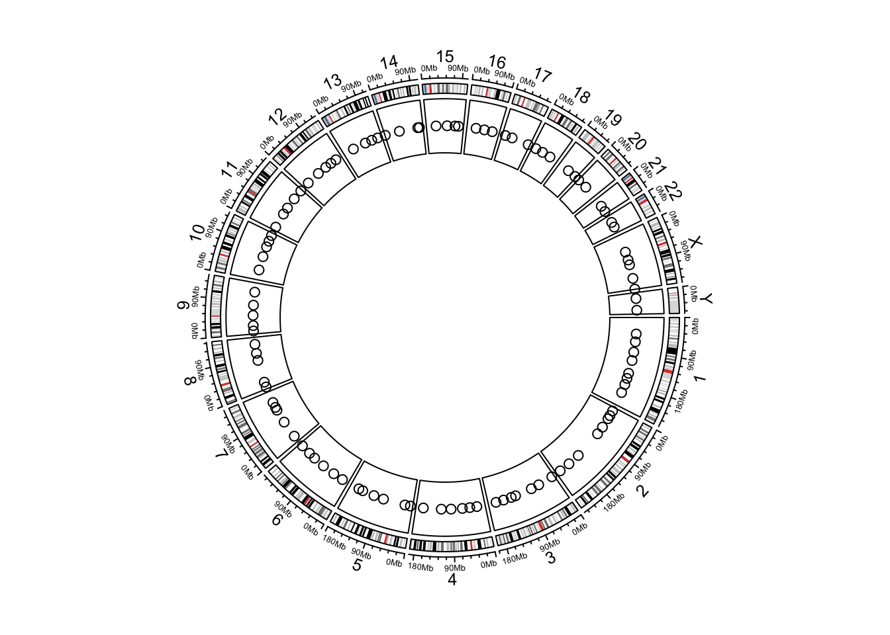
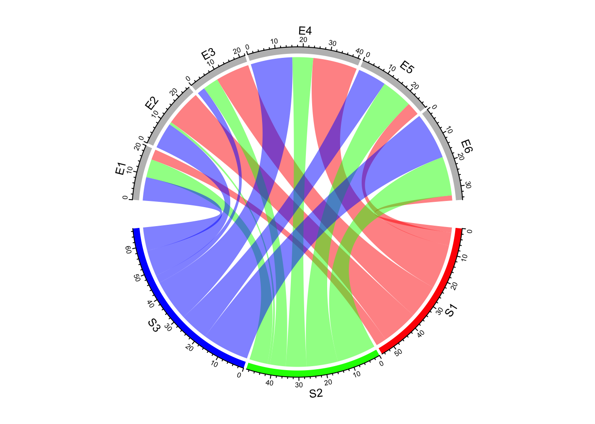
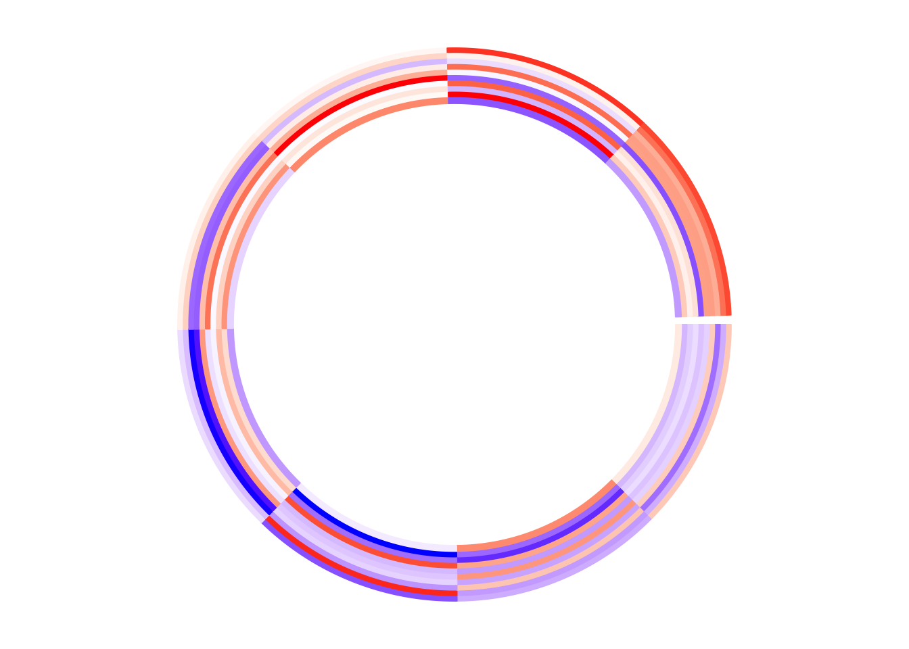

Quick start
The circlize package in R is designed for creating
circular plots, including circular heatmaps, chord
diagrams, and more.
It provides a flexible framework for implementing circular layouts in R, making it easy to visualize complex relationships and patterns in data. This package is particularly useful for genomics, network analysis, and other fields where circular visualizations can provide unique insights.
✍️ author → Zuguang Gu
📘 documentation → Book
⭐️ more than 900 stars on github

Installation
To get started with circlize, you can install it
directly from CRAN using the install.packages function:
Basic usage
The circlize package provides a set of functions for
creating circular plots.
In this example, we create a simple 3x6 matrix with
random values and use it to generate a chord diagram. The
chordDiagram() function automatically creates a circular
layout where each row and column of the matrix is represented as a
sector, and the values in the matrix determine the
thickness of the links between sectors.
library(circlize)
# Set a seed for reproducibility
set.seed(999)
# Create a sample matrix
mat <- matrix(sample(18, 18), 3, 6)
rownames(mat) <- paste0("S", 1:3)
colnames(mat) <- paste0("E", 1:6)
# Create a basic chord diagram
chordDiagram(mat)
Key features
→ Chord Diagrams
Chord diagram are particularly
useful for visualizing relationships between entities. The
chordDiagram function makes it easy to create these
diagrams.
This diagram shows the relationships between three “S” entities and six “E” entities. The size of each link represents the value in the corresponding cell of the matrix.
Note: for interactive chord diagrams, you can use the chorddiag package
library(circlize)
# Create a sample matrix
mat <- matrix(sample(18, 18), 3, 6)
rownames(mat) <- paste0("S", 1:3)
colnames(mat) <- paste0("E", 1:6)
# Create a chord diagram
chordDiagram(mat)
→ Genomic Data Visualization
circlize is particularly useful for visualizing genomic
data. It provides functions to easily plot genomic features on a
circular layout.
This example creates a circular representation of the human genome (hg19) and adds random genomic points to it.
circos.initializeWithIdeogram()function sets up the basic structure of the plotcircos.genomicTrackPlotRegion()adds the data points to the plot
library(circlize)
# Generate random genomic data
bed <- generateRandomBed(nr = 100)
# Initialize the plot with an ideogram
circos.initializeWithIdeogram(species = "hg19")
# Add genomic points
circos.genomicTrackPlotRegion(bed, stack = TRUE, panel.fun = function(region, value, ...) {
circos.genomicPoints(region, value, ...)
})
→ Customization
circlize offers extensive customization options for your
plots. You can control colors, sector sizes, link transparency, and much
more.
In this example, we customize the colors of the sectors. The “S” sectors are given distinct colors, while the “E” sectors are all grey.
library(circlize)
# Set a seed for reproducibility
set.seed(999)
# Create a sample matrix
mat <- matrix(sample(18, 18), 3, 6)
rownames(mat) <- paste0("S", 1:3)
colnames(mat) <- paste0("E", 1:6)
# Define custom colors for sectors
grid.col <- c(
S1 = "red", S2 = "green", S3 = "blue",
E1 = "grey", E2 = "grey", E3 = "grey", E4 = "grey", E5 = "grey", E6 = "grey"
)
# Create a customized chord diagram
chordDiagram(mat, grid.col = grid.col)
→ Circular Heatmaps
Circular heatmaps are another powerful feature of
circlize. They allow you to visualize matrix data in a
circular layout thanks to the circos.heatmap()
function.
The colorRamp2 function is used to define a
color scheme that maps values to colors.
library(circlize)
# Create a sample matrix
set.seed(123)
mat <- matrix(rnorm(80), 8, 10)
rownames(mat) <- paste0("R", 1:8)
colnames(mat) <- paste0("C", 1:10)
# Create a color mapping function
col_fun <- colorRamp2(c(-2, 0, 2), c("blue", "white", "red"))
# Create a circular heatmap
circos.heatmap(mat, col = col_fun)
Gallery of circlize examples
Here are a few more examples to showcase the versatility of
circlize: